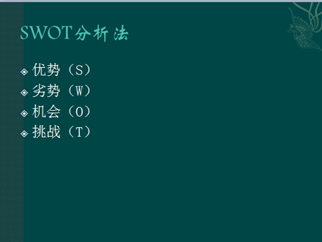
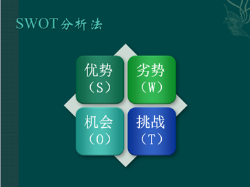
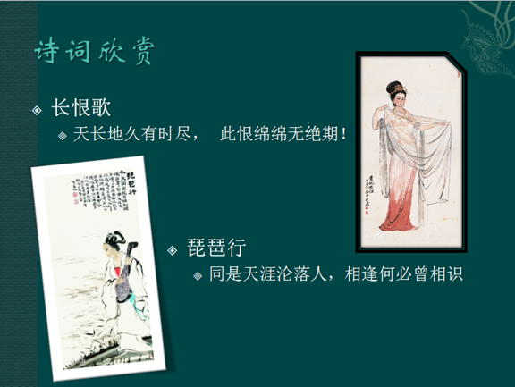

上机实验
一、实验目的
1．掌握PowerPoint运行方式和幻灯片制作的基本知识；
2．掌握PowerPoint操作界面的组成、工作区的组成以及状态栏的作用，熟悉常用工具栏、格式工具栏和绘图工具栏使用方法；
3．掌握插入图片对象、插入日期时间和页面的方法；
4．掌握选择“应用设计模板”和“页面模板”的方法；
5．掌握幻灯片制作放映过程。
二、实验内容
1．建立演示文稿；
2．设置幻灯片母版版式，字体，插入页码、日期；
3．为幻灯片加入文字，SmartArt图形与图片
4．设置动画。
三、实验步骤
（1） 创建空白演示文稿。打开PowerPoint2010，将功能区切换到“文件”选项卡，点击“新建”命令，选择“空白演示文稿”。
（2） 创建标题幻灯片。在标题占位符中输入“我的幻灯片”，在副标题占位符中输入“计算机基础实验”。
（3） 应用主题。在“设计”选项卡的“主题”选项组选中主题“凤舞九天”。
（4） 添加新幻灯片。按下“幻灯片”选项组的“新建幻灯片”按钮下部，在下拉表中选择“标题和内容”版式。添加新幻灯片，编号为2。
（5） 创建幻灯片内容。在标题框中输入文字“SWOT分析法”。在内容框中输入如样张图 29所示文字：

（6） 将文字转化为SmartArt图形。选中文本内容，在“开始”选项卡的“段落”选项组中按下“转换为SmartArt”按钮，选中“基本矩阵”，在“SmartArt工具”-“设计”选项卡中找到“SmartArt样式”选项组，在“更改样式”的下拉菜单中选中“彩色-强调文字”，然后将样式改为“强烈样式”，得到如图 30所示结果。

（7） 为SmartArt图形设置动画效果。选中SmartArt图形，将功能区切换到“动画”选项卡，选择“旋转“效果，如果没有看到可以点击展开“动画”选项组的样式框，在里面查找。“效果选项”设置为“逐个”。在“计时”选项卡中设置 “持续时间”-2秒，点击“预览”查看动画效果。
（8） 图文混排。
① 输入文本。添加新幻灯片，版式为“两栏内容”。在标题框中输入文字“佳句欣赏”；在第一栏内容框中输入一级文本“长恨歌”，二级文本“天长地久有时尽， 此恨绵绵无绝期！”；在第二栏内容框中输入一级文字“琵琶行”，二级文本“同是天涯沦落人，相逢何必曾相识”。
② 插入图片。切换到功能区中的“插入”选项卡，在“插图”选项组中点击“图片”按钮 ，插入图片“长恨歌.jpg”和“琵琶行.jpg”。
，插入图片“长恨歌.jpg”和“琵琶行.jpg”。
③ 修改图片外观。点击选中图片“长恨歌.jpg”，切换到功能区中的“图片工具格式”选项卡，在“图片样式”选项组中的外观样式表中选择样式“复杂框架，黑色”。按下“大小”选项组的“裁剪” 按钮，在下拉菜单中选中“裁剪为形状”选择“剪去单角的矩形”。点击选中图片“琵琶行.jpg”，设置外观样式为“旋转，白色”。
按钮，在下拉菜单中选中“裁剪为形状”选择“剪去单角的矩形”。点击选中图片“琵琶行.jpg”，设置外观样式为“旋转，白色”。
④ 位置大小调整。调整文本框和图片的大小位置如所示。

图 31图文混排样张
（9） 设置幻灯片切换效果。进入“切换”选项卡，选择“淡出”切换效果。
（10） 设置幻灯片母版。
① 将功能区切换到“视图”选项卡，点击“母版视图”选项组的“幻灯片母版”按钮，进入母版编辑模式。在工作界面右侧的窗格中显示出演示文稿可用的所有版式。
② 鼠标单击选中第一张版式。单击名为“单击此处编辑母版副标题样式”的文本框，切换到“开始”选项卡，选择右对齐，设置字体为“华文行楷”。
③ 切换到功能区中的“插入”选项卡，在“文本”选项组中按下“日期和时间”按钮，弹出“页眉和页脚”对话框，在“幻灯片”选项卡中勾选“日期和时间”， “幻灯片编号”以及“标题幻灯片中不显示”。“日期和时间”设为“自动更新”，“语言”为“中国”。按下“全部应用”按钮关闭对话框。
④ 切换到功能区中的“幻灯片母版”选项卡，点击“关闭母版视图”按钮，完成幻灯片母版设置，回到幻灯片编辑模式。
（11） 设置切换效果放映。选中任意一张幻灯片，切换功能区到“切换”选项卡，设置幻灯片自动放映细节。在“切换到此幻灯片”选项组中选择 “华丽型”-“闪耀”，“效果选项”设置为“从上方闪耀的六边形”，点击“全部应用”按钮，让演示文稿中所有幻灯片都使用这些设置。
（12） 添加背景音乐。在标题幻灯片中添加放映时的背景音乐。选中标题幻灯片，在“切换”选项卡的“切换到此幻灯片”选项组中将“声音”选项改选为“其他声音”，弹出“添加音频”对话框，添加“高山流水.wav”，添加成功后再勾选 “声音”下拉菜单项中的“播放下一段声音之前一直循环”。
（13） 存盘，输入文件名“我的幻灯片”。
四、自我练习
添加一个目录页，目录页中通过超链接可以导航到任意一张幻灯片。